Workflows
Git gives you the means to set up a code and data management workflow that fits your use case. The best choice depends on your existing practices, the size of your data, whether you collaborate on the code or data, whether collaboration is with colleagues or with external partners, and so on. But your choice is also constrained by project commitments. For example, LAMASUS partners are obliged to adhere to FAIR principles.
Below, code and data management workflows suited for various use cases are depicted graphically and discussed briefly. They can be combined to a custom workflow.
Note
The blue arrows in the diagrams below represent more than just simple movement of information: Git ensures that select content of repositories on either end of these arrows is efficiently brought into perfect and verifiable synchrony by means of cryptographic checksums, transferring only changes, and applying compression.
Manage files locally
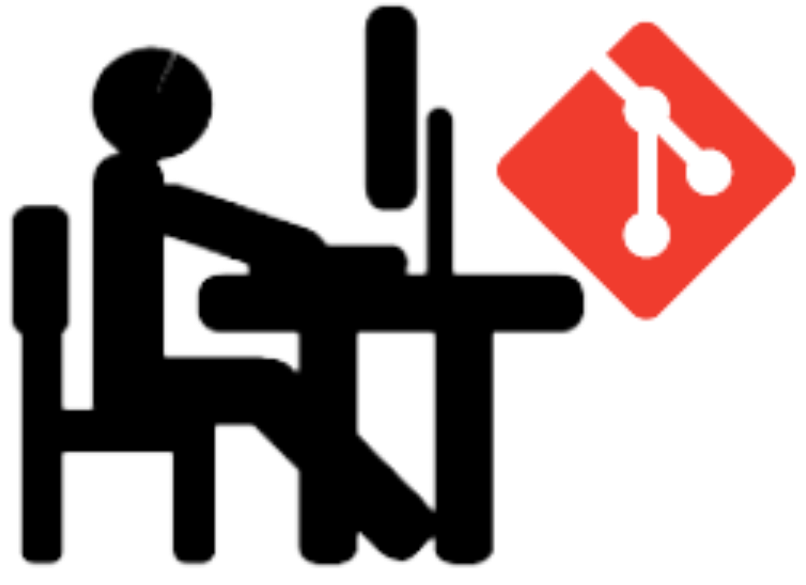{kind=link}
To manage, version, and track modifications to a tree of files, you can use Git locally on your personal machine. The repository is stored on a local disk.
Manage files on a server
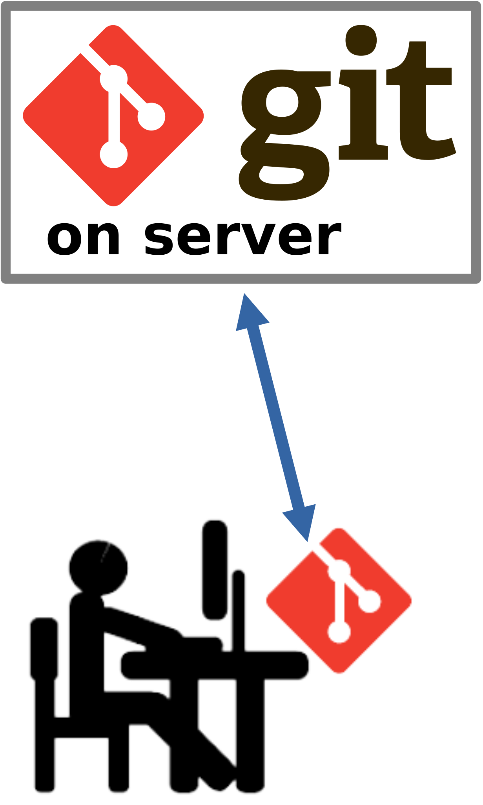{kind=link}
You can connect your local repository to a remote repository hosted on a Git server so that the files you manage reside on the server as well. This enables:
The editing and processing of the files on fast local storage with a well-managed and secure backup residing on the server.
Discarding the local repository when you stop working on it, you can later clone it from the server to resume work on it.
Note
Git does not require a permanent connection. You can work and commit changes offline, for example during air travel, and synchronize your local repository with the remote repository later.
Collaborate with colleagues
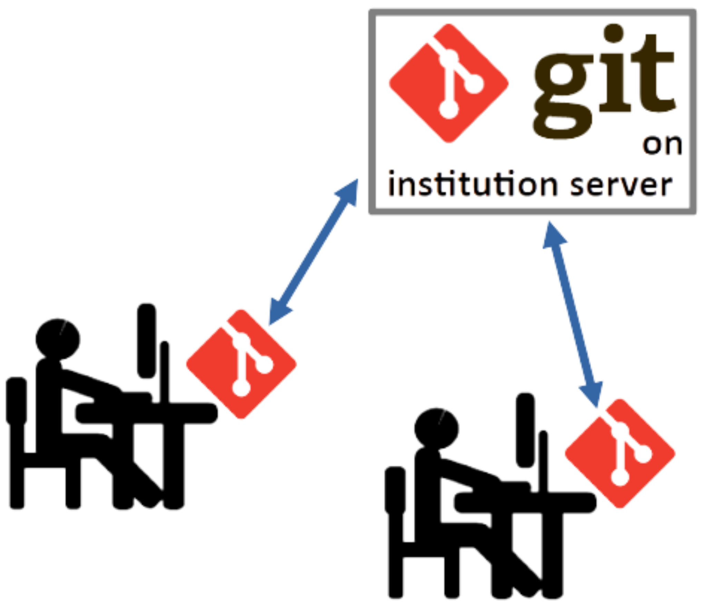{kind=link}
To collaboratively manage files with colleagues, a repository on your institution’s Git server can be used and synchronized selectively to and from local Git repositories for each collaborating colleague. To manage how your local repository connects to the remote repository, use the git remote command.
Tip
When collaborating via a remote Git server, you can be selective about what changes committed to your local repository are pushed out to the remote repository. Sharing only quality work makes for productive collaboration.
Collaborate with the world
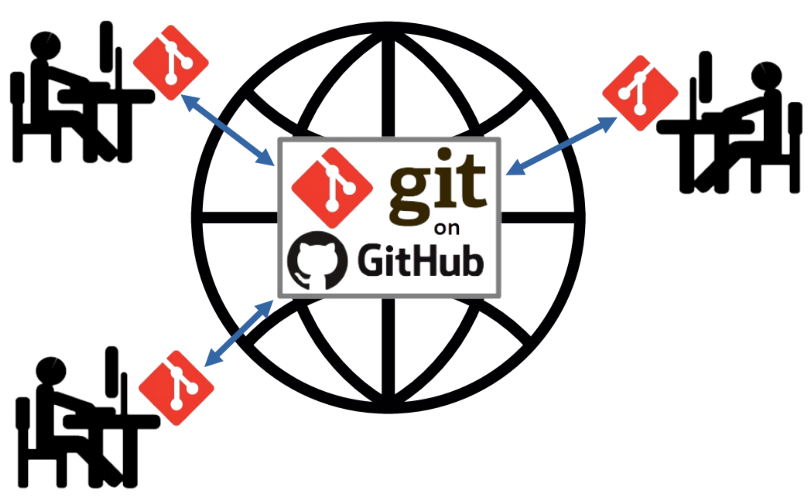{kind=link}
To collaborate with anyone anywhere, a repository on GitHub can be used and synchronized selectively to and from the local Git repositories for each collaborator. Anyone can create a GitHub account.
Beyond hosting Git repositories, GitHub provides a rich set of additional collaboration services that can be attached to repositories: issue tracking, documentation hosting, notifications, release management, and so on. GitLab is similar.
Manage large data locally
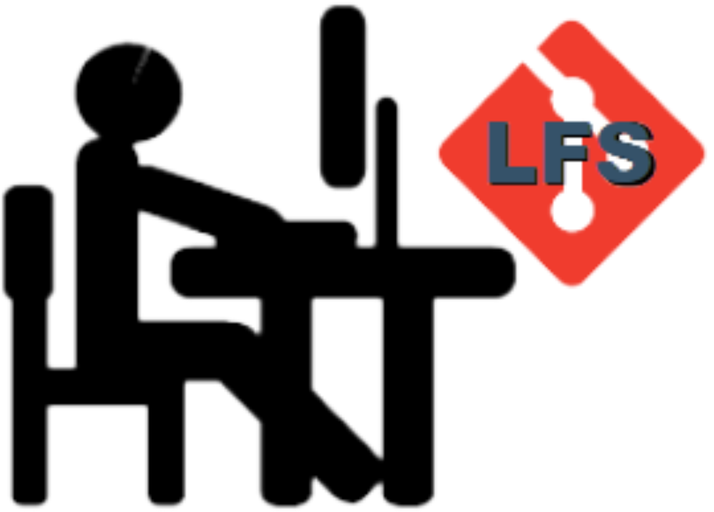{kind=link}
To locally manage, version, and track modifications to large data files, use the Git LFS (Large File Storage) extension.
Collaborate on large data
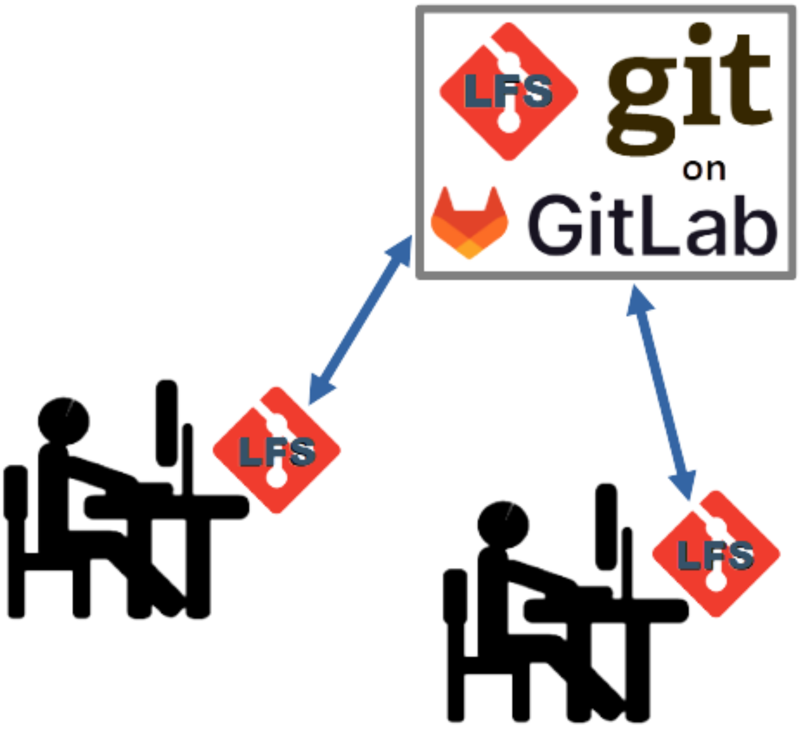{kind=link}
To collaborate on large data managed through Git, host the repository on a server that supports Git LFS and synchronize selectively to and from local Git LFS repositories for each collaborator. The LAMASUS GitLab server supports Git LFS. GitHub also supports Git LFS, but the service is not for free and quite expensive. You institutional Git server (if extant) may or may not support LFS. Check with your IT department.
See also the discussion of Git’s partial clone functionality.
Collaborate with colleagues and release on GitHub or GitLab
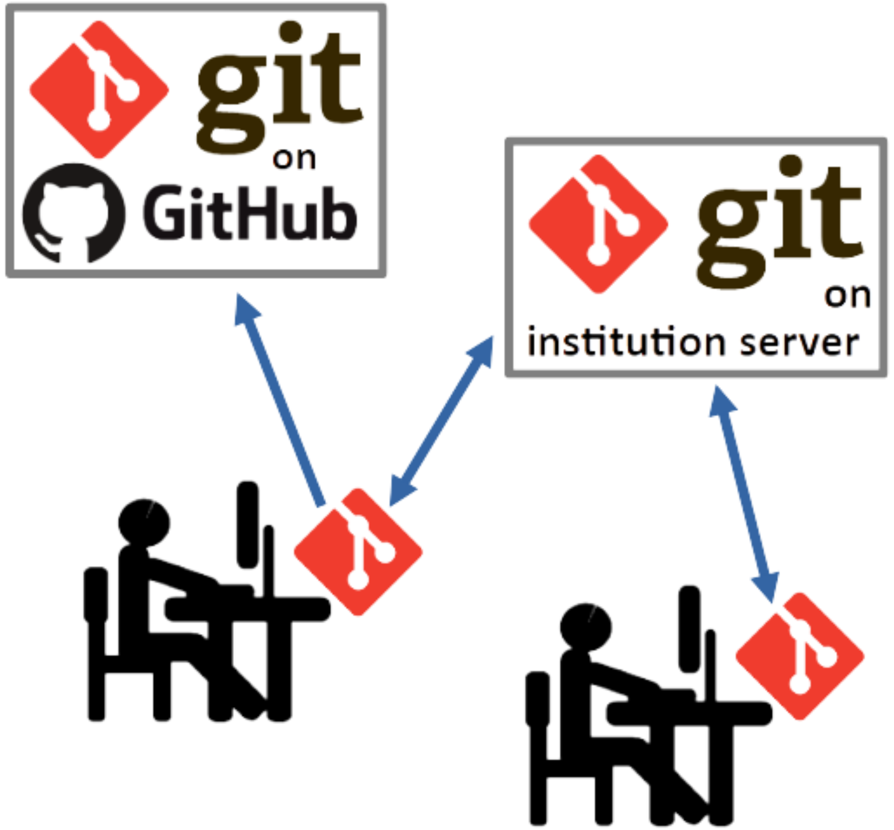{kind=link}
A public GitHub repository can be used to release an open-source code base or open-access dataset. For publishing large data, release onto a Large File Store enabled Git LFS public repository on the LAMASUS GitLab instance.
In the diagram above, the user on the left is the release manager. See the discussion of GitHub/GitLab release management for further details.
Release on GitHub and Zenodo
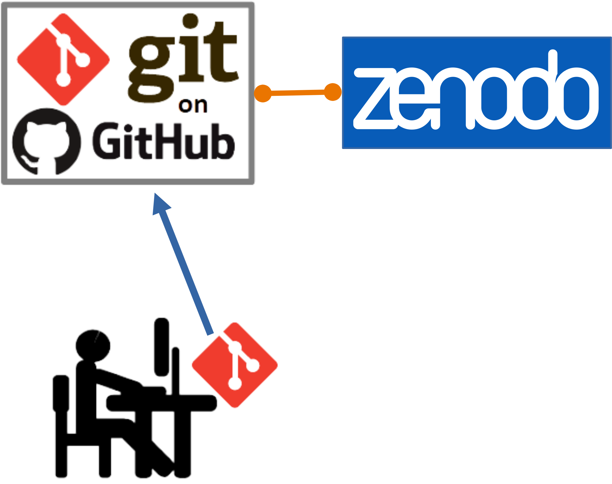{kind=link}
By making use of the Zenodo GitHub integration you can release on GitHub and Zenodo simultaneously and make your release findable and DOI citable.
Release on GitLab, GitHub, and Zenodo
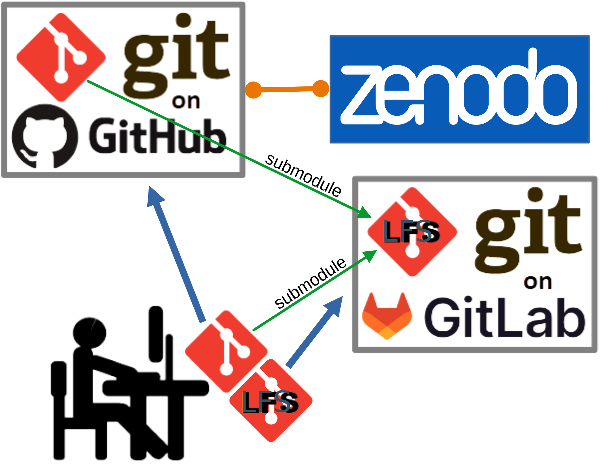{kind=link}
By making use of the Git submodules feature and the Zenodo GitHub integration you can release on GitHub and Zenodo while referencing via a submodule a specific release of large data in a Git LFS repository hosted on the LAMASUS GitLab instance. The large data effectively becomes part of a GitHub-Zenodo release, by reference.
Forking and Pull Requests
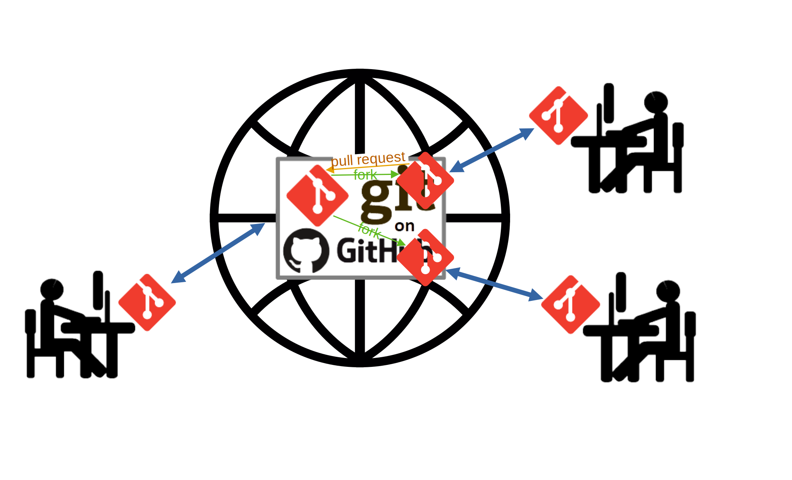{kind=link}
Once you have released a public repository on GitHub or GitLab, anyone can retrieve its content, typically by cloning the repository. When your repository catches the interest of many people, some will make improvements and wish to contribute those back. You could manage that by giving such newly found contributors push access to the public repository, but this requires detailed administration of access and extending trust.
Instead, GitHub and GitLab by default allow repositories to be forked which means that users copy the repository not to their local disk but to the same GitHub or GitLab platform, under an account managed by them. The parent repository is also called the upstream repository.
After forking, users can make changes to their fork without affecting the official upstream repository that you manage. After making an improvement, users will often want to contribute it back (upstream it) so that they can later benefit from releases that contain their improvement as well as other upstream improvements: without upstreaming, new releases would have to be merged with the fork in order to get all improvements. GitHub enables users to contribute without having push access to the upstream repository by means of a pull request. GitLab has a very similar feature called a merge request which works from a fork when using the forking workflow. Both GitLab merge requests and GitHub pull requests can also be used to merge a branch located in the same hosted repository, instead of from a forked repository.
Though Git itself has built-in features that can merge a branch in the same local repository, or fetch and merge a branch from a remote repository, instead using a GitHub pull request or a GitLab merge request can be done through the web interface of either platform and provides for convenient collaboration via comments, notifications, and assignment of a user responsible for handling the request, and so on.
Tip
Even when the upstream repository is not public, and collaboration is local to an organization, this workflow can be a good choice:
The pull/merge requests allow review and discussion of changes to the upstream repository or main branch before they are accepted.
The forks can serve as cloud-hosted backups for the specific content of the local repositories of collaborators.
Caching datasets
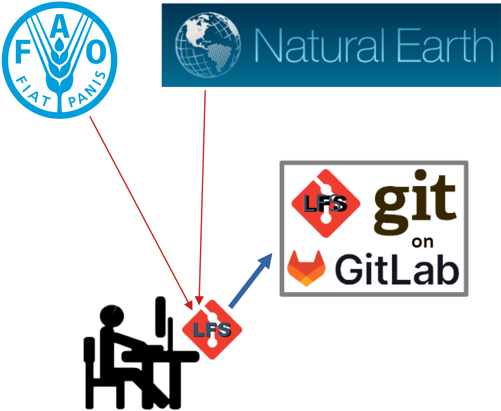{kind=link}
Modeling often relies on third-party datasets. These can be downloaded from where they have been published, for example a web site or SFTP server. This takes time, is sometimes failure prone, and there is often no guarantee that the dataset will remain available. To overcome these issues, a Git LFS repository hosted close to where the data is processed can be used to cache — for recurring use — the collection of datasets needed by a particular model.
By using Git, you keep the mutual versions of the datasets under control and build up a history of such version collections as repository commits. This allows you to reproduce results by retrieving a commit as used in a prior model run.
Caution
Before using this workflow to cache very large datasets, coordinate with the administrators hosting the Git LFS server to ensure that it has sufficient capacity.
Referencing repositories
Tying together repositories via Git submodule references allows you to combine trees of files managed via Git using disparate workflows into a single parent repository. In this parent repository, a commit (a particular version of the file tree resulting from applying some changes) references specific commits in child repositories pointed to via submodule references. This effectively results in a single reproducible file tree even when the sub trees that your reference are managed by different workflows: it might be a different team responsible for updating the content of the referenced repository, the referenced repository might be hosted elsewhere, releases might happen according to a different schedule, and so on.
By including other file trees by reference, you avoid having to make a copy: copies tend to start to live a life of their own that you will need to manage.
Referencing assets
When your app or model depends on an asset available on the wider Internet that is not under Git version control, you can in principle download that asset and make a copy available by including it in your Git repository. But the asset may be very big, or redistribution of the asset may be forbidden or complicated by its license. In such cases, including the asset by reference is preferred.
A reference points to where an asset can be retrieved and indicates what protocol should be used to retrieve it. Typically, a reference is represented by a URL. By including the reference and the code to download in your Git repository, you can ensure that the asset is downloaded when your app or model is installed or run.
For example, you can include in your repository a bash script such as the one below. It downloads some data in a ZIP archive via a URL, verifies via a checksum that the expected data was downloaded, and unzips the content.
#!/bin/bash
set -e
curl -f --output data.zip https://fenixservices.fao.org/faostat/static/bulkdownloads/Forestry_E_All_Data.zip
sha256sum --check <<SUMS
41f063a6b112afce69171a31603e5707432c6f93767802039dcf7f51800a2cce *data.zip
SUMS
unzip data.zip
rm data.zip
Caution
Assets hosted elsewhere can disappear. Evaluate the stability of the host and the longevity of the asset before referencing it.
Note
Since the remote asset to which the URL points can in principle change, it is
prudent to verify it. The verification checksum can be obtained by invoking
sha256sum data.zip after downloading the asset for the first time.
Tip
If your code runs frequently and the asset is big, the repeated downloading might burden your Internet uplink, or the host might even dynamically decide to deny you further access because of excessive downloads. In such cases it is worth exploring whether you can download assets via a caching proxy.
Custom workflow
You are not limited to picking one of the above workflows: you can combine or adapt them to fit your use case. This can be done in a step-wise manner, adding more elaboration as the collaboration grows or the work nears release.
Large high-value projects such as Linux kernel development are being managed with custom distributed Git workflows. For more information, see the Distributed Git - Distributed Workflows section of the Pro Git book.